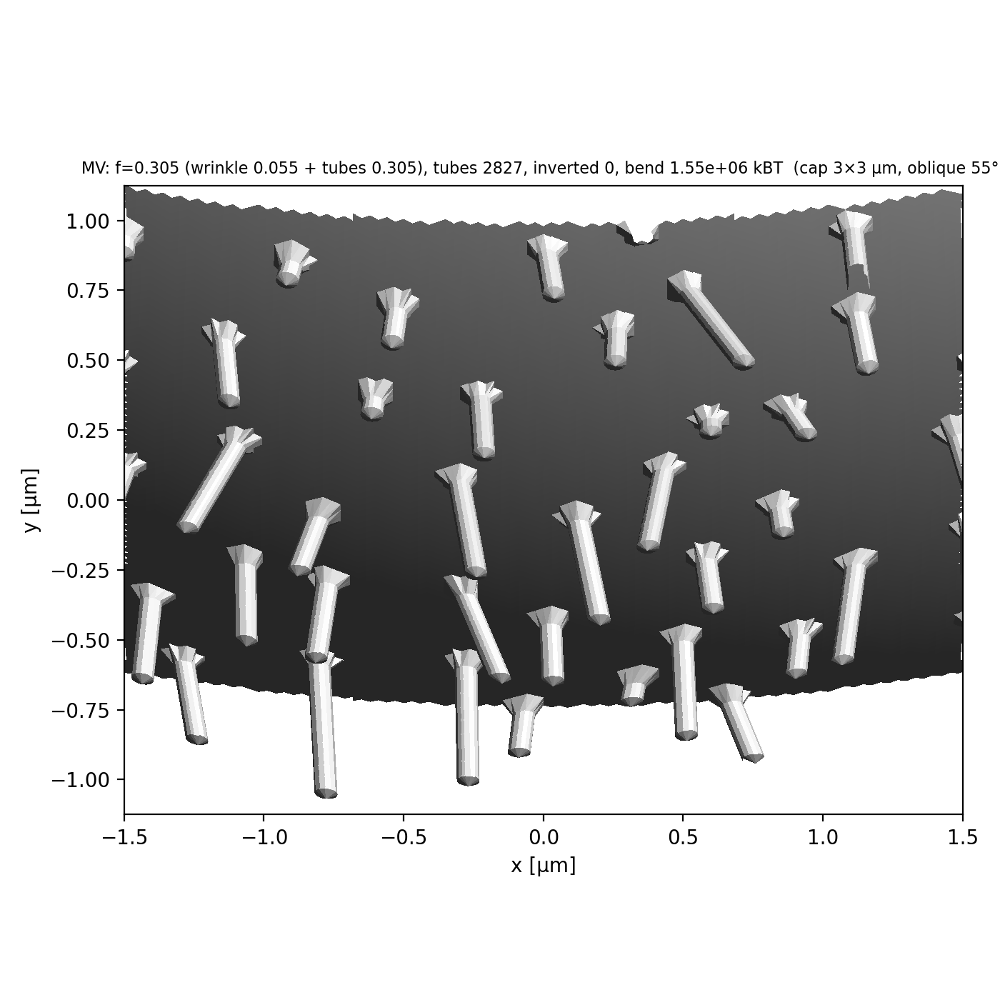

Cell mechanics / Membrane
Plasma membrane
The membrane is built with its spare area stored in wrinkles and microvillus tubes, not as a smooth sphere.
Built, not yet checkedLaws
Plasma membrane as built
Built, not yet checkedexcess area stored in wrinkles and microvillus tubes
\[A_{built}=(1+f)\,4\pi R^2,\quad f=f_{wrinkle}+f_{tubes}\]
- Built as
- The membrane is not a smooth sphere: its reservoir is built in.
- Inputs
- cell radius SOURCED (BNID 115154); excess area SWEPT
- Evidence
- Build census; device arm 2026-09-11: inverted faces 1,367 → 898 with equilateral tube faces.
Microvilli are off in the long native record.

Lipid lateral diffusion
Written, switched offlabels diffuse on the membrane
\[\langle\Delta r^2\rangle=4D\,\Delta t\]
- Built as
- Tangential Gaussian steps with unfolding.
- Inputs
- 5 EXAMPLE
- Evidence
- No MSD test yet.
Off.
Lipid count flow
Written, switched offlipid moves between surface patches
\[q_e=c_e(\sigma_L-\sigma_R)\]
- Built as
- Backward Euler on the patch graph.
- Inputs
- 6 EXAMPLE
- Evidence
- Host conservation tests.
Off.
Ion channels
Written, switched offconformations with detailed balance
\[E_{cap}=q^2/(2cA),\quad k_f/k_r=e^{-\Delta F/k_BT}\]
- Built as
- —
- Inputs
- 7 EXAMPLE
- Evidence
- Host detailed-balance test.
Not instantiated.
Where it lives in the code
aleph/cell/build/membrane.pyaleph/cell/build/part.py
In the engine's cell data
- membrane population · surface · boundary:cell
membrane.areal_density= 0.005 pg/um^2membrane.channel_density= 1.0 1/um^2 - myo1 kinetic relation · membrane → cortex, cortex_arp23
myo1.areal_density= 20.0 1/um^2
87 input rows (18 example, 69 swept); 1 bound; 3 derived. Wiring: 0 unread, 87 written (read by code, not yet verified on a device), 0 verified. Generated from engine commit 2afc475d8.
Inputs
| Input | Value | Tag | Source |
|---|---|---|---|
membrane.spacing_factor | 1.0 1 | swept | RES-UNIFY declared arm (Lead 2026-10-08, PI SWEEP-ALL-UNCERTAIN; PI may override): the membrane mesh as a multiple of resolution.spacing. 1 = the… moreuniform rule (default; 1.85 edges per bending-tension length xi = sqrt(kappa / sigma) ~ 92.5 nm at 0.05). 0.5 = the arm that resolves xi (3.7 edges per xi), at ~4x the membrane's nodes. Not chosen for an outcome |
membrane.mesh | derived (spacing_multiple) um | sourced | same 50-100 nm band as the cortex; floor PI-approved 2026-08-25 (subdiv 8 at R=7.5, edge 35 nm). Bound to resolution.spacing 2026-08-28; its former… moresweep band [0.050, 0.100] is recorded on the target. RES-UNIFY 2026-10-07: meshed as a geodesic of frequency part.surface_frequency (211 at 0.05: mean edge 0.0499 um on the wrinkled area, 445,212 nodes; was icosphere subdiv 8, median edge 39.3 nm, 655,362 nodes) |
membrane.tension | 10.0 pN/um | swept | bilayer in-plane tension gamma_mem 10 pN/um, band 3-40 (KB-3.B1.1); laws/compartments.resolve_membrane. ALSO SETS THE MEMBRANE p0 (PI 2026-09-24… more09:05): the derived row membrane.p0 = 2 x this / cell.radius, the Laplace balance at the built radius (PI 2026-09-29 decision 10) — there is no membrane.pressure row (it was a 40 Pa HeLa proxy that no tension in the file balanced). Turgor becomes an OUTPUT once motors carry cortical tension; with osmotic.water_permeation = 1 the osmotic law carries the normal stress and p0 is 0. |
membrane.kappa_bend | 0.0856 pN.um | swept | Helfrich bending rigidity 20 kBT (KB-3.B1.2); laws/membrane_surface. Referenced at 310 K (cell.temperature; realism audit 2026-10-03 R-D3, PI… more2026-10-06 19:09): 20 x 1.380649e-23 J/K x 310 K = 8.560e-20 J = 0.0856 pN.um; the row said 0.0828 = 20 kBT at 300 K. The 20 kBT is the source's number and is unchanged; if KB-3.B1.2's measurement temperature is room temperature the J value is 0.0823 and the 310 K reference is this file's convention, not a temperature dependence. This is the CONTINUUM rigidity: the discrete hinge law reads 2 kappa / sqrt(3) (assemble.hinge_kappa_bend). | param-ledger-1013 s1: 20 kT(310 K) in pN.um (derive.kbt_pn_um) = 0.08560024; typed 0.0856 is -2.8 ppm off, so NOT a derive row (a derived row would change the resolved value); a material value that does not follow cell.temperature; independent of chem.delta_g_atp (same typed 0.0856, different quantity). |
membrane.areal_density | 0.005 pg/um^2 | swept | 5 nm bilayer x ~1.0 pg/um^3 |
membrane.excess_area | 0.36 1 | swept | VALUE 0.36 IS A LEUKOCYTE TRANSFER, not an MCF7 measurement (L7, 2026-10-13, literature pass membrane_literature_1013.md): T-lymphocyte SEM 40-49 % /… morerupture A*/A0 1.22-1.4 (Guillou 2016). The ONLY suspended-MCF7 number is a dielectric folding factor phi = 2.46 +- 0.40, i.e. f = phi - 1 ~ 1.46 (Gascoyne 2013 Electrophoresis, NCI-60 DEP-FFF, Table: MCF7 r 9.08 +- 3.71 um, C_mem 22.2 +- 3.6 mF/m2 over the 9 mF/m2 smooth membrane; full text; the capacitance method sits ~x2 from EM / aspiration on granulocytes, so this is an upper hint, not a point). Neutrophils lyse at 2.1-2.6x area (abstracts). The value is NOT changed here; the range is the literature span and the storage form is the membrane.reservoir_arm axis (sinusoidal wrinkles have no primary source; suspended-cell reservoirs are microvilli, folds, filopodia). EARLIER RANGE 0-0.70 (PI 2026-10-07 20:35 KST, transcript ef9e7f17: the part ladder builds a smooth vesicle, f = 0, and small worlds; the band below stays the physiological one): the CELL's total excess area f = A / A_sphere - 1 (build/membrane: the wrinkle carries f minus the microvillus tubes' measured share). origin E (KB-2026-09-1x-membrane-remainder §3, PI 2026-09-10 23:16; row set (a) = the 09-10 decision table, applied to this file PI 2026-10-06 19:50): f 0.36, band 0.22-0.70 — Guillou 2016 aspiration A*/A0 - 1 on suspended leukocytes 0.22-0.48 (a transfer, stated), SEM stock 0.40-0.49, adherent ceiling 0.7 (Groulx 2006); MCF7/MDA f is KB-GAP. In THIS file microvillus.areal_density = 0, so the isotropic wrinkle (lambda 0.30) carries all of f; the microvillus share 0.18 is the declared variant dev/experiments/ladder/spec_tubes_rows.toml (SPEC=tubes). Was 0.15 [0.06, 0.60] (variant A, endothelial band, PI decision E1) until 2026-10-06 |
membrane.mu_2d | 0.0 pN/um | example | PI-BATCH-2016 (2026-10-07 20:16 KST, lane cell-structure-1007) A11: a lipid bilayer is a 2D FLUID — zero in-plane shear modulus, finite surface shear… moreviscosity — so the bilayer's own mu_2d is 0; in-plane shear resistance comes from what is attached to it (the spectrin-like skeleton, spectrin.*, tied at face points; the cortex through erm). The old value 10 pN/um is the DECLARED COMPARISON ARM (set this row to 10 and spectrin.enabled to 0). The mesh keeps a declared NUMERICAL regularisation, membrane.mesh_regularisation_mu. Before A11: 2D shear modulus of the surface's in-plane network; every mesh edge is a segment at K_edge = 4 mu_2d / sqrt(3) (rung 5 arm (e): a triangular edge network with axial K has shear modulus sqrt(3) K/4 and area modulus sqrt(3) K/2; PLAN-2026-09-03z §2.3, PLAN-2026-09-03ab §1), rest = as-built. 10 pN/um is the rung-10 rig's EXAMPLE value (rung-10 rig — a development experiment, dev/experiments/ladder/rung10_surface_support.SURFACE_MU_2D since Phase 4 (ffba0ee2)), the one Z1 measured (the surface's dt ceiling 1e-7 -> 1e-6, no inversions) — NOT a bilayer property (a fluid bilayer has no shear modulus; the spectrin/ERM-cortex contribution is the physical carrier and is KB-GAP). Replaces membrane.edge_k: the term is ON for every closed surface and K is DERIVED, never typed (R0' fold, RESULT-2026-09-03-w5-r0prime) |
membrane.wrinkle_wavelength | 0.3 um | swept | option (b) for the outer membrane (CONTRACT-2026-09-09 addendum, PI 2026-09-09): the excess area is carried as wrinkles of this correlation length so… morearea0, volume0, edge rests and the face-area constraint's built_area derive from ONE geometry (FINDING-2026-09-08-membrane-area-reference). Origin E (KB-2026-09-1x-membrane-remainder §3, PI 2026-09-10 23:16), canonical form PI 2026-10-06 20:58 (R-D5-E2): lambda 0.30 um, ISOTROPIC (64 plane waves), carrying all of f; band 0.25-2.0 — >= 5 nodes per wavelength at mesh 0.05, Helfrich ~ 1/lambda^2 forbids smaller, fold scale 0.5-2 um; a STAND-IN for the MCF-7 microplicae (Franchi 2019 SEM Fig 3c/6d), NOT a measured wavelength. The ANISOTROPIC ridge of the decision table (membrane.ridge_window 1.0 um) is a DECLARED VARIANT (dev/experiments/ladder/spec_ridge_rows.toml), re-proposed only after the cortex builder covers deep ridges: with the ridge carrying f 0.36 the native build refuses at build/cortex.py:407, 'cortex: a chord is 0.0974 um after the membrane cap, and the growth law refuses a built row at or above 0.0750 um (l_max - l_min)' (2026-10-06 host build; ridge at f 0.18 and isotropic at f 0.36 build). Was 1.0 [0.5, 2.0] isotropic until 2026-10-06. Removing this row restores option (a) |
membrane.wrinkle_modes | 64 1 | swept | number of plane waves in the wrinkle family (a REPRESENTATION count of the Gaussian random field, not biology): 64 is the literal every build used… moreuntil 2026-10-07 (build/part.wrinkle_field); the field's statistics converge as the count grows, so the count is a convergence axis. Cost ~ count x mesh vertices | independent of envelope.wrinkle_modes: two surfaces' representation counts; same value 64. |
membrane.wrinkle_wavelength_spread | 0.0 1 | swept | lognormal sigma of the per-mode wavelength about membrane.wrinkle_wavelength (0 = one wavelength). Real surfaces carry a FAMILY of fold scales… more(microvilli 0.06-0.1 um wide, folds/ruffles 0.5-2 um: KB-2026-09-1x-membrane-remainder; Majstoravich 2004, Guillou 2016 — candidates, not audited); no source gives a spectrum, so the width is swept |
membrane.wrinkle_spectral_exponent | 0.0 1 | swept | amplitude spectrum of the family: mode weight (lambda_i / lambda)^beta, > 0 long folds dominate, < 0 short ones; inert at spread 0. No measured… moremembrane-height spectrum of a living MCF-7 surface in the KB (KB-GAP) |
membrane.wrinkle_anisotropy | 0.0 1 | swept | orientation bias of the family about the cell's polar (z) axis: each wave direction's z component scaled by 1 - a (0 isotropic; -> 1 crests run along… morethe polar axis, apical-basal ridging). Oriented ridges/convolutions on MCF-7 on aligned collagen: Franchi 2019 J Clin Med 8:213 (not in KB; qualitative) |
membrane.wrinkle_patchiness | 0.0 1 | swept | spatial patchiness: the family multiplied by max(0, 1 + p h) with h a unit-rms field of correlation length membrane.wrinkle_patch_scale (0 =… moreuniform). SEM shows folds and microvilli in patches, not uniform (Franchi 2019, Majstoravich 2004; candidates) |
membrane.wrinkle_patch_scale | 2.0 um | swept | correlation length of the patch envelope; read only when membrane.wrinkle_patchiness > 0. A guess band, sub-cell to hemisphere scale; KB-GAP |
membrane.reservoir_arm | 0 1 | example | ARM SELECTOR (L7, 2026-10-13; the PI is ASKED whether the reference reservoir moves to microvilli + folds, Lead recommendation yes): where… moremembrane.excess_area is stored. 0 = sinusoidal wrinkles (membrane.wrinkle_*; the canonical build, unchanged; microvilli only at a typed microvillus.areal_density); 1 = discrete microvilli carry all of f on an otherwise SMOOTH sphere (count DERIVED = f x smooth mesh area / the area one tube adds, geometry microvillus.reservoir_*; microvillus.areal_density must be 0); 2 = microvilli carry membrane.reservoir.microvillus_fraction of f, the wrinkle the rest. Folds / ruffles / filopodia (Jurkat, neutrophil, HeLa) are not yet a carrier of this selector |
membrane.reservoir.microvillus_fraction | 0.5 1 | swept | arm 2 only (membrane.reservoir_arm = 2): the share of membrane.excess_area the microvillus tubes are COUNTED to carry; the wrinkle carries the rest.… moreNo MCF7 split is measured (suspended-MCF7 morphometry by SEM / FIB-SEM is a literature gap, membrane_literature_1013.md (d)1): a SWEPT axis, 0.5 only a mid-range starting point. Read nowhere in arms 0 and 1 |
membrane.reservoir.pit_fraction | 0.0 1 | swept | share of the radial reservoir (f minus tubes minus base shape) carried by inward pits — the caveola stand-in. Caveolae hold ~0.3 % of area (Sinha… more2011 Cell; Kosmalska 2015 — candidates); MCF-7 is caveolin-1 negative / caveolae-deficient (SE419 Fiucci 2002, SE420 Lavie 1998, audit OK, qualitative), so 0 here; MDA-MB-231 expresses Cav-1 (unverified). Sub-mesh at resolution.spacing 0.05: the builder refuses pit_radius below membrane.mesh |
membrane.reservoir.pit_density | 2.0 1/um^2 | swept | pit sites per um^2 of the nominal sphere (count = density x 4 pi R^2); read only when pit_fraction > 0. Caveola densities of order 1-10 /um^2 in… morefibroblasts / endothelium are typical literature values NOT checked against the KB (unverified) |
membrane.reservoir.pit_radius | 0.05 um | swept | Gaussian width of one pit; a caveola cup is 60-80 nm across (Sinha 2011, candidate) i.e. ~0.035 um radius — BELOW the 0.05 mesh, so the band starts… moreat the mesh and its upper end stands for caveolar rosettes / clathrin-scale clusters. A Gaussian dimple, not a flask with a neck |
membrane.reservoir.bleb_fraction | 0.0 1 | swept | share of the radial reservoir carried by outward caps — blebs / microvesicle-like protrusions. MDA-MB-231 globular cells are covered in… moreblebs/microvesicles (Franchi 2019, not in KB; Tsujita 2021 SE213 OK: MDA-MB-231 ruffles and blebs, MCF7 not), so 0 for MCF-7 |
membrane.reservoir.bleb_density | 0.02 1/um^2 | swept | bleb sites per um^2 (count = density x 4 pi R^2); read only when bleb_fraction > 0. 0.02 /um^2 = ~14 caps on R 7.5; no counted bleb density in the KB… more(KB-GAP) |
membrane.reservoir.bleb_radius | 0.75 um | swept | Gaussian width of one cap; blebs are ~1-2 um across (Charras & Paluch 2008 SE416 OK, qualitative scale); read only when bleb_fraction > 0 |
membrane.volume_modulus | derived (van_t_hoff_modulus) pN/um^2 | example | PI decision 2026-09-16 18:57: KEEP. The enclosed-volume law p = p0 + K_V (V0 - V)/V0 (Surfaces.k_volume, 2026-09-16, RESULT-2026-09-15 s10.4): the… morelinearised van 't Hoff law of an enclosed ideal solution, K_V = pi_internal = 300 mM x 2577 pN/um^2/mM (a ~300 mOsm internal solution x osmotic.pressure_per_mM; d pi / d ln V = -pi at fixed solute; water crosses on the osmotic time scale, which is far longer than these steps). DERIVED since param-ledger-1013 (PI 2026-10-13 16:30, audit #16): osmotic.external is now a row, so the product is derived instead of typed (300.0 x 2577.0 = 773100.0 exactly, bit-identical to the former typed value; the internal solution is taken isotonic with the medium, as the source above states). It was SWEPT 77310-7731000 (factor 10, 'nothing better'); that range is retired with the typed value: sweep osmotic.external (260-340 mM) or osmotic.pressure_per_mM. An internal osmolarity different from the medium's is a new row, not a number typed here. Since PI 2026-10-07 21:03 (Q5) the K_V/V0 COMPARISON ARM only: with solute.ion_transport = 1 (shipped) the core releases it on every transporting surface and records the replaced value (cell/solute_build.osmotic_term); it acts again only with osmotic.water_permeation = 0. |
membrane.area_modulus | 200000.0 pN/um | swept | bilayer area-expansion modulus K_A ~0.2 N/m (Rawicz 2000). not in KB source_audit — register before SOURCED |
membrane.lysis_strain | 0.03 1 | swept | bilayer rupture at ~3-5% areal strain (Evans 2003). not in KB source_audit — register before SOURCED |
membrane.viscosity_2d | 0.1 pN.s/um | swept | membrane surface shear viscosity ~1e-9 Pa.s.m = 1e-3 pN.s/um (Saffman-Delbruck; Dimova 2006). not in KB source_audit — register before SOURCED. SWEPT… more(surface-visc-1007, SWEEP-ALL-UNCERTAIN): reported bilayer values span ~1e-10..1e-8 Pa.s.m and cell plasma membranes read higher (protein crowding), so the axis is 1e-4..1e-1 pN.s/um; the centre is not a measurement DEFAULT 1e-3 -> 0.1 (PI 2026-10-13 18:16 KST (ledger DECISIONS-1013-1816, transcript 1e5b7b67), item 5): the value the 45 U1 ladder arms already pin; at 1e-3 the dt 1e-3 step objective is non-convex in the in-plane membrane modes (device evidence GPU-1008 convexity arms, 01_DECISIONS rows of 2026-10-08: mu 1e-3 FORCE-ACCEPTED 10/10, mu 1e-2 and 1e-1 FA 0/10; converged LOBPCG lambda_min -5.9/-4.8/-5.4 pN/um with viscosity off, +0.36 with mu 1e-2; U1 T0 mu = dilation = 0.1 FA 20/20, row B16B-3090-0302). 0.1 is the TOP of the declared range (one-sided SWEPT axis: no device arm went above 0.1); it is still SWEPT, not a measurement. |
membrane.dilation_viscosity_2d | 0.001 pN.s/um | swept | Independent area-dilation viscosity selected as an exploratory input under PI 2026-09-15 authorization; center 1e-3 and range 1e-5..1 are not a… moremeasurement or uncertainty interval. Do not alias shear. Vesicle pore-fit apparent viscosity may include omitted water friction (Ryham 2011, PMC3244058); no MCF7 source claim. DEFAULT 1e-3 -> 0.1 (PI 2026-10-13 18:16 KST (ledger DECISIONS-1013-1816, transcript 1e5b7b67), item 5, same reasoning as membrane.viscosity_2d): every device arm that cleared the non-convex step set shear AND dilation together (U1 T0_fluid_visc01_psd mu = dilation = 0.1 FA 20/20, B16B-3090-0302; MINI arm B mu = dilation = 1e-2), and the Boussinesq-Scriven operator routes both coefficients through the same face operator; no arm isolates dilation, so the flip is the pair the evidence supports. Range [1e-5, 1] unchanged. |
membrane.surface_viscosity_enabled | 1 1 | example | switch, not a material value: 1 puts the Boussinesq-Scriven face operator (physics.surface_viscosity) in the step, 0 leaves the step exactly as it is… moretoday. Default 1 (law ON; PI decision PLAN-1008-STEP0-1, 2026-10-08 17:03 KST, transcript ef9e7f17); a material coefficient is never a switch. Interpretation condition: at dt 1e-3 the step is well-posed only for membrane.viscosity_2d >~ 1e-2 (device evidence GPU-1008 convexity arms: mu 1e-3 FORCE-ACCEPTED 10/10, mu 1e-2 and 1e-1 FA 0/10); a result at mu below that is a labelled non-convex-step run, not a conclusion. |
membrane.lipid_diffusion | 1.0 um^2/s | swept | lipid lateral diffusion ~1 um^2/s. not in KB source_audit — register before SOURCED |
membrane.spontaneous_curvature | 0.0 1/um | example | Helfrich spontaneous curvature; 0 = symmetric bilayer (PI-GAP for the real leaflet asymmetry). not in KB source_audit — register before SOURCED |
membrane.kappa_gauss | -0.066 pN.um | swept | Gaussian rigidity ~ -0.8 kappa (Hu 2012); enters only through topology changes. not in KB source_audit — register before SOURCED |
membrane.lipid_area_per_molecule | 7e-07 um^2 | swept | Generic fluid phosphatidylcholine scale, not MCF7: Kucerka et al. J Membr Biol 2005 DOI 10.1007/s00232-005-7006-8 reports POPC 68.3 +/- 1.5 A^2 at 30… moreC. 0.7 nm^2 = 7e-7 um^2; range is exploratory, not that paper's confidence interval. Both leaflets contribute 2/a molecules per projected bilayer area. |
membrane.inplane_flow_enabled | 1.0 1 | example | switch, not a material value: 1 gives every membrane face a lipid COUNT as state and lets that material move between faces along the tension… moredifference (physics.surface_count_flow), so the face-area reference becomes N_f x membrane.lipid_area_per_molecule instead of the area the face was built with (area_constraint_reference = 'count' on the integrate.step path; FaceAreaALM reads Faces.built_area live on the energy core). ON since 2026-10-07 (lane flow-filamin-1007, aleph/docs/v2_audit/NOTE-2026-10-07-inplane-flow.md). The two reasons it shipped 0 are closed: (1) the 'unexplained membrane volume-flux instability (INVENTORY E21/E22)' was RETRACTED the same night by INVENTORY E24 (21:21 KST 2026-09-21) -- a period-2 runaway made by the recorder (engine.sample_block's between-step force pass rewrote surfaces.volume, which the next step's pressure law read), fixed in 4cd5766c0 (sample_block saves and restores what it writes) and verified on a device in INVENTORY E25(d) (EVERY = 1 bounded, -236..+373 um^3/s); it never involved this flow, which came in one minute earlier and was off in every arm; (2) the edge solve now converges by construction (one-unit-of-material stop, warm start, sim.inplane_flow_cg_iters a cap with the residual recorded) instead of a fixed 64 updates at tolerance 0 (record 402: 0.5-1.3 % residual every step). Written, not verified on a device at this value: the live energy core reads the reference only on surfaces listed in [core] face_area. Without it a tether cannot form and, under plate compression, the contact zone and the free zone cannot exchange membrane, so the membrane tension is artificially non-uniform in exactly the experiment that reads cortical tension. |
membrane.inplane_friction | 1000.0 pN.s/um^3 | swept | PI-GAP, and a STAND-IN that is to be REPLACED rather than sourced. The in-plane flow law v = grad(sigma)/b needs a drag per unit area per unit… morein-plane velocity; membrane-cortex friction is reported around 1e8-1e9 Pa.s/m (tether-pulling and flow measurements of the Shi/Baumgart kind; 1 Pa.s/m = 1e-6 pN.s/um^3, so 1e2-1e3 in these units) — quoted from memory, NOT read in a paper here and NOT in the KB source_audit, hence EXAMPLE and hence a range that is exploratory and not a confidence interval. The PI's decision (OPTIONS-2026-09-21 item 3) is that this coefficient should EMERGE from the making and breaking of the explicit ERM relations that tie the bilayer to the cortex, the way composite viscosity must be an observable and not an input (directive 9). This row exists so the flow law can run before that emergence is built, and is to be deleted when it is. |
membrane.lipid_label_fraction | 0.01 1 | swept | Passive material identity label fraction chosen for an observable self-diffusion population. Labels are chemically identical and do not change total… morelipid mass or membrane free energy; this is a measurement choice, not an inferred composition fraction. |
membrane.lipid_tracer_enabled | 0.0 1 | example | switch, not a material value: 1 puts the labelled-tracer walk (physics.surface_diffusion) in the step AFTER the mechanical solve. The tracer exerts… moreNO force and never enters the solve; at 0 no labels are allocated and the step is exactly as it is today. Shipped 0 (Lead, PI autonomy grant 2026-10-07, on LIVE-1007's open item): readout only; turned on per arm that reads surface_diffusion. It exerts no force and at native allocates floor(2 A_membrane x membrane.lipid_label_fraction / membrane.lipid_area_per_molecule + 0.5) = 27,466,366 labels x 60 B = 1.65 GB on the device (aleph/docs/v2_audit/NOTE-2026-10-07-live-point.md). The code stays wired (energy.statelaws). |
membrane.channel.molecular_mass | 860370.0 Da | swept | Unmodified canonical human peptide trimer: UniProt Q92508 monomer286790Da times3; homotrimer architecture Ge2015 DOI10.1038/nature15247. External… moreprimary checked, KB registration pending. Glycosylation/isoform mass uncertainty is not identified; range exploratory.1Da=1.66053906892e-12pg. |
membrane.channel.hydrodynamic_radius | 0.01 um | swept | Effective radius of the massive center-node translational hydrodynamic representation, not a spherical structural claim. Piezo dome dimensions are… moretens of nm (Guo and MacKinnon2017 DOI10.7554/eLife.33660); anisotropic shape/rotation is not represented by one center. |
membrane.channel.excluded_lipid_area | 0.0001 um^2 | swept | Exploratory lipid-excluding transmembrane protein area100nm^2. Distinct from total curved membrane footprint and conformation area INCREMENT.… moreAssembly subtracts membrane.areal_density times this area from local lipid-node mass, then adds the independently sourced protein mass; refuses any nonpositive material mass. Not measured MCF7. |
membrane.channel.initial_closed_fraction | 0.7 1 | swept | Explicit preparation distribution, not inferred steady state. Remaining states: open fraction specified below and inactive remainder. All pores… moreinitially empty; no hidden stationary-oracle initialization. |
membrane.channel.initial_open_fraction | 0.02 1 | swept | Explicit preparation distribution; closed+open must not exceed1, inactive is the remainder. Not a measured native occupancy. |
membrane.channel.insertion_normal_stiffness | 10000.0 pN/um | swept | Exploratory curvature of normal hydrophobic insertion energy, not a lateral tether or drag. Example quadratic confinement costs about20kBT at4nm… moredisplacement at310K; neither a measured Piezo stiffness nor a desorption model. Tangential center motion remains free in the global node/fluid solve. |
membrane.channel.exclusion_radius | 0.005 um | swept | exclusion radius of a membrane channel protein node (aleph.cell.exclusion.RANGE_ROWS; C3 cb23270e7). not in KB source_audit — register before SOURCED |
membrane.channel_population_enabled | 0.0 1 | example | switch, not a material value: 1 appends the channel PROTEIN POPULATION as massive nodes tied to the sheet (physics.surface_channels.massive_node_plan… more+ physics.surface_insertion), at membrane.channel_density x built membrane area, count = floor(density*area + 0.5). The displaced lipid mass removed from the existing membrane nodes is count x membrane.channel.excluded_lipid_area x membrane.areal_density, distributed by the host face's barycentric weights; a build that would drive any node mass to zero or below is REFUSED, never clipped. The gating chemistry is NOT switched on by this row. Default 0 leaves the node table byte-identical. |
membrane.curvature_law_enabled | 0.0 1 | example | switch, not a material value: 1 hands this surface's bending to the Helfrich law (physics.surface_curvature; rigidity kept, reference =… moremembrane.spontaneous_curvature) and writes kappa_bend = 0 in the hinge law, which the step then refuses to see nonzero; 2 additionally sets C0 to the as-built curvature (rest shape = built shape, for a stiff curved surface). Default 0 leaves the step exactly as it is today. |
membrane.excess_area_fraction | = membrane.excess_area 1 | example | C1 binding: the same quantity was declared SWEPT by the resolution lane (membrane.excess_area); the frontier alias follows it |
membrane.hydraulic_conductivity | 1.4e-07 um^3/(pN.s) | swept | Lp = Pf Vw / RT with Pf = 20 um/s (bilayer / cultured cell without strong aquaporin expression): 1.40e-13 m/(Pa.s) = 1.4e-7 um^3/(pN.s). The 0.1 that… morestood here until 2026-09-21 was a 1e6 UNIT SLIP against its own source text (1e-13 m/(Pa.s)). Volume relaxation time R/(3 Lp c RT) = 23 s. PI-GAP for MCF7; not in KB source_audit — register before SOURCED. PARAMETERS-2026-09-21 | independent of envelope.bilayer_hydraulic_conductivity: one nuclear-envelope sheet vs the plasma membrane; same value 1.4e-7, different declared ranges. |
membrane.channel_density | 1.0 1/um^2 | swept | mechanosensitive channel (Piezo1) density — PI-GAP (a target Aleph must find; the number is an initial point) (laws/piezo). not in KB source_audit —… moreregister before SOURCED |
membrane.permeability_na | 0.0002 um/s | swept | plasma-membrane GHK permeability to NA (resting P_Na : P_K : P_Cl ~ 0.04 : 1 : 0.4 order, Hille); the absolute scale is a PI-GAP for MCF7. not in KB… moresource_audit — register before SOURCED |
membrane.permeability_k | 0.005 um/s | swept | plasma-membrane GHK permeability to K (resting P_Na : P_K : P_Cl ~ 0.04 : 1 : 0.4 order, Hille); the absolute scale is a PI-GAP for MCF7. not in KB… moresource_audit — register before SOURCED |
membrane.permeability_cl | 0.002 um/s | swept | plasma-membrane GHK permeability to CL (resting P_Na : P_K : P_Cl ~ 0.04 : 1 : 0.4 order, Hille); the absolute scale is a PI-GAP for MCF7. not in KB… moresource_audit — register before SOURCED |
membrane.permeability_ca | 1e-06 um/s | swept | PI-GAP: resting (non-channel) plasma-membrane GHK permeability to Ca2+; no source consulted, the bracket is 4 decades around a placeholder. Gated Ca… moreentry is the inclusions' open states, not this row. |
membrane.specific_capacitance | 1.0 uF/cm^2 | swept | specific membrane capacitance ~1 uF/cm^2 (Hille); with membrane wrinkles in the mesh the per-mesh-area value applies. not in KB source_audit —… moreregister before SOURCED |
membrane.p0 | derived (laplace_p0) pN/um^2 | example | the membrane sheet p0, DERIVED (PI 2026-09-29 decision 10, DESIGN-2026-09-29-declared-derivations B2/B7; aleph/cell/derive.laplace_p0): 2… moremembrane.tension / cell.radius, the Laplace balance at the built radius (PI 2026-09-24 09:05 derived, never typed). Named p0, not turgor: turgor is an OUTPUT once motors carry cortical tension. Laid by build/membrane unless the osmotic law is on (then 0: the solute state carries the normal stress) |
membrane.half_thickness | 0.0025 um | swept | half of a lipid bilayer (~5 nm across); the contact half-thickness of the plasma membrane met as its faces (PI 2026-09-23 21:24 decision 1). With… moreenvelope.spacing 0.04 it gives the envelope's derived half-thickness 0.0225 um (exclusion.surface_half_thickness), the value the PI's 21:46 (b) decision quotes. not in KB source_audit — register before SOURCED |
membrane.mesh_regularisation_mu | 1.0 pN/um | swept | PI-BATCH-2016 (2026-10-07 20:16 KST, lane cell-structure-1007) A11: NUMERICAL, NOT PHYSICAL — the in-plane edge network (K = 4 mu / sqrt 3 per mesh… moreedge, build/part.edge_stiffness) that keeps the membrane mesh from shearing into slivers once the bilayer's own membrane.mu_2d is 0 (a lipid bilayer is a 2D fluid). Declared as numerical per the PI; 1 pN/um is a tenth of the old 10 pN/um rig value and a sixth of spectrin.mu_2d, so the physical shear carrier (the spectrin network, the cortex through erm) dominates. A result that moves when this row moves inside its range is a mesh artefact, not physics. Upgrade path: a tangential-only remesh/regulariser (no in-plane stiffness at all) in the engine |
membrane.polarity.tension_apical | 0.0 pN/um | example | L6 POLARITY-1015: the prescribed tension INCREMENT dsigma [pN/um] on the membrane's apical faces (cell/polarity: every face not on the adherent cut's… morebasal plane), added to the surface law's sigma(A) face by face (energy.facepolarity E = dsigma A_f; SimuCell3D per-face-type gamma, cell.cpp:1374-1390). 0 = no polarity: the value is a PI decision (PI-GAP; no MCF7 apical/basal tension split found in the KB) |
membrane.polarity.tension_basal | 0.0 pN/um | example | L6 POLARITY-1015: the prescribed tension INCREMENT dsigma [pN/um] on the membrane's basal faces (cell/polarity: the three vertices on the adherent… morecut's plane, cell.preparation_adherent = 1; none in the suspended specimen). 0 = no polarity: PI-GAP |
membrane.polarity.tension_lateral | 0.0 pN/um | example | L6 POLARITY-1015: the prescribed tension INCREMENT dsigma [pN/um] on lateral faces — never laid at build (a single cell has no neighbour); only the… morecontact rule (physics.surface_polarity, CoreOptions.auto_polarity) sets the tag. 0 = no polarity: PI-GAP |
membrane.polarity.contact_tag | 2 1 | example | L6 POLARITY-1015: the tag a membrane face takes while a counting contact holds on it (SimuCell3D automatic_polarizer: substrate contact -> basal,… moreneighbour-cell contact -> lateral). 2 = basal: the substrate's contact. Which contact sets which tag is a PI decision (PI-GAP) |
membrane.polarity.contact_side | 1 1 | example | L6 POLARITY-1015: which barrier scopes count as contact for the membrane's rule, by the scope's declared side… more(physics.surface_polarity.resolve_counts): +1 = contacts from the outward-normal side (a substrate, a neighbour, a wall) — not the cortex pushing from inside (-1); 0 = either. PI-GAP |
membrane.polarity.k_on | 1.0 1/s | example | L6 POLARITY-1015: the rate [1/s] a contacted membrane face moves to contact_tag (two-state chain, exact over dt; physics.surface_polarity).… moreSimuCell3D re-types faces at once (an instantaneous rule); no measured MCF7 polarisation rate in the KB: PI-GAP |
membrane.polarity.k_off | 0.1 1/s | example | L6 POLARITY-1015: the rate [1/s] a face at contact_tag returns to its built tag (in contact or not; under contact the stationary fraction is… morek_on/(k_on + k_off)). No measured depolarisation rate in the KB: PI-GAP |
membrane.remesh_reserve | 0 1 | example | W-FUMEM 2026-10-15: allocate dormant nodes and face slots using engine surface.remesh.reserve. CoreOptions.surface_remesh explicitly selects… moresurfaces. Default OFF; A11 replacement and material transfer adoption remain PI decisions. |
membrane.surface_field_enabled | 0.0 1 | swept | WRINKLE arm C: OFF/ON parallel curvature-field mechanism; no default selection. Exploratory support declared before any run, not a biological… moremeasurement, fit, or sourced quantitative prior. Curvature-protein coupling is qualitative mechanism motivation only. |
membrane.surface_field_concentration | 1.0 1/um^2 | swept | WRINKLE arm C: initial uniform areal count density; engine evolves conserved nodal count. Exploratory support declared before any run, not a… morebiological measurement, fit, or sourced quantitative prior. Curvature-protein coupling is qualitative mechanism motivation only. |
membrane.surface_field_coupling | 0.1 um | swept | WRINKLE arm C: C0 shift alpha times count/dual area; sign and magnitude unidentified. Exploratory support declared before any run, not a biological… moremeasurement, fit, or sourced quantitative prior. Curvature-protein coupling is qualitative mechanism motivation only. |
membrane.surface_field_susceptibility | 0.01 pN.um^3 | swept | WRINKLE arm C: quadratic field energy chi times count squared divided by twice dual area. Exploratory support declared before any run, not a… morebiological measurement, fit, or sourced quantitative prior. Curvature-protein coupling is qualitative mechanism motivation only. |
membrane.surface_field_mobility | 0.1 1/(pN.um.s) | swept | WRINKLE arm C: nonnegative Onsager coefficient for conservative cotangent chemical-potential flux. Exploratory support declared before any run, not a… morebiological measurement, fit, or sourced quantitative prior. Curvature-protein coupling is qualitative mechanism motivation only. |
membrane.rest_area_growth_rate | 0.0 1/s | swept | WRINKLE arm B: signed logarithmic reference-length or reference-area remodeling rate. Tallinen 2014 doi:10.1073/pnas.1406015111 and 2016… moredoi:10.1038/nphys3632 motivate differential growth qualitatively only. Rate and support are exploratory, not inferred from measured roughness or sourced biology; stiffness and node material mass unchanged. |
microvillus.areal_density | 0.0 1/um^2 | swept | 0 in THIS file (PI 2026-10-06 19:50): under origin E the wrinkle carries the whole f; the microvillus population — 2.2 /um^2 at L 0.30 +- 0.14… moreclipped [0.10, 0.80], tilt <= 25 deg, jitter 0.15 um, r 0.04, share 0.18 of f (KB-2026-09-1x-membrane-remainder §3, PI 2026-09-10 23:16) — is a DECLARED VARIANT only: dev/experiments/ladder/spec_tubes_rows.toml with the launcher's SPEC=tubes (aleph/scripts/vessl_arm.sh). PI note 2026-10-06: microvilli currently matter mainly visually; their effect on cortical tension must be studied first. Band 0-7 /um^2 (Majstoravich 2004 median 2-4; Guillou 2016 6.9). Earlier: PI 2026-08-29 01:45 default OFF (straight uniform 1 um tubes are a drawn shape) |
microvillus.reservoir_length | 0.284 um | swept | microvillus length of the reservoir arm: 284 +- 140 nm (mean +- SD), human T lymphoblasts, SEM (Guillou 2016 Mol Biol Cell 10.1091/mbc.E16-06-0414,… morePMC5221589; quote re-found in the saved full text). A leukocyte value, not MCF7: SECONDARY, KB registration pending; the only suspended-MCF7 reservoir number is a dielectric folding factor (Gascoyne 2013, see membrane.excess_area) |
microvillus.reservoir_length_sd | 0.14 um | swept | SD of the microvillus length, 140 nm (Guillou 2016, T lymphoblasts; quote re-found in the saved full text); lengths are drawn as a normal about… moremicrovillus.reservoir_length clipped at microvillus.reservoir_length_min. SECONDARY, KB registration pending |
microvillus.reservoir_length_min | 0.1 um | swept | lower clip of the drawn microvillus lengths: two mesh edges above the foot, as the origin-E clip (KB-2026-09-1x-membrane-remainder §3; the… morespec_tubes_rows overlay microvillus.length_min 0.10). A numerical clip of the normal draw, not a biological minimum; with the census mean 284 +- 140 nm about 9 % of draws are clipped (normal CDF at (0.10 - 0.284) / 0.14) |
microvillus.reservoir_radius | 0.031 um | swept | membrane tube radius of the reservoir arm: half the lymphoblast microvillus diameter 62 +- 13 nm (Guillou 2016, quote re-found in the saved full… moretext), T cells, NOT MCF7: SECONDARY, KB registration pending. On a 0.05 um membrane mesh a 31 nm tube is a 4-gon prism (ring apothem 21.9 nm); the mesh cannot round it - see the L7 MAP (aleph/docs/v2_audit/MAP-2026-10-13-membrane-reservoir.md) |
microvillus.reservoir_filaments | 5 1 | swept | actin core filaments of a reservoir microvillus: the largest hex-packed bundle (microvillus.spacing 12 nm) whose outermost filament surface clears… morethe 4-gon tube's ring apothem 21.9 nm at radius 31 nm / mesh 0.05 um (5: 17.1 nm; 6: 22.7 nm and 7: 22.0 nm do not). The 20-filament core of microvillus.filaments (reach 37.8 nm) does not fit a 62 nm tube at all. The real number is a literature gap: SWEPT; the builder refuses a core that does not fit its tube |
microvillus.length | 1.0 um | swept | microvilli 0.5-2 um long; MCF7 value KB-GAP |
microvillus.radius | 0.05 um | swept | membrane tube radius ~50 nm (microvillus diameter ~0.1 um); the bundle (r ~0.025) sits one ERM reach inside it |
microvillus.filaments | 20 1 | swept | core bundle 20-30 filaments; the same band as the filopodium bundle. an INDEPENDENT row since PI 2026-09-29 decision 11… more(DESIGN-2026-09-29-declared-derivations §7.7): it was bound to filopodium.filaments, and its value is filopodium.filaments's at source — a source coincidence, not a runtime coupling, so a sweep or an inference of filopodium.filaments no longer moves this row |
microvillus.spacing | 0.012 um | swept | espin / fimbrin / villin inter-filament spacing ~12 nm (KB-DRAFT-3-23: bundlers UNSOURCED); the same 12 nm as the stress-fiber packing. an… moreINDEPENDENT row since PI 2026-09-29 decision 11 (DESIGN-2026-09-29-declared-derivations §7.7): it was bound to stress_fiber.spacing, and its value is stress_fiber.spacing's at source — a source coincidence, not a runtime coupling, so a sweep or an inference of stress_fiber.spacing no longer moves this row | independent of stress_fiber.spacing, sf_arc.spacing: different populations' packing; same 12 nm. |
microvillus.seg | = resolution.spacing um | example | bead spacing = fluid cell (directive 6) |
microvillus.tip_clearance | 0.05 um | swept | COINCIDENT VALUE (cell-expand 2026-10-07): equal to resolution.spacing but kept an INDEPENDENT row — binding it changed a build or contradicted a PI… moredecision on independence. core tip this far below the membrane cap (one fluid cell) |
Experiments
- Microvilli on and off mini record